The Story, in Order
- IThe Dream
- IIThe Property
- IIIThe Hotel
- IVThe Labyrinth
- VThe Worlds
- VIThe Tunnels
- VIIThe Mythology
- VIIIThe Treasure
- IXThe Farm
- XThe Esoteric
- XIThe Residence
- XIIThe Business
- XIIIThe Privacy
- XIVThe Timeline
- XVThe Closing
A Vision.
Labyrinth Park is not a theme park. It is not a facade. It is not a performance of mystery. It is a genuine labyrinth: mysterious, ever-shifting, never fully known, and perhaps carrying with it some element of danger worked into something positive. Visitors will only ever see a fraction of what is really happening.
It is, first and foremost, a home. A real expression of the person who built it. Not a spy who pretends to live in a fortress, but a genuinely mysterious person who does live in a fortress, from which exude bizarre wonders that nobody imagined. He is exactly what he is, and nothing more or less. The mystery is not faked. It is real because the labyrinth is him.
But it is also a hotel, to serve guests when the home overflows. A business that makes the vision financially possible. A contribution to the community, not reclusive consumption of it. A living labyrinth that no visitor will ever fully explore, even across a lifetime of returns.
Five principles guide every decision. Genuine over performed: every mystery is real. The tunnels are real tunnels, the hidden passages lead to real places, the archaeology is conducted by real universities. Scarcity over abundance: limited admissions, sections that open and close; the complete experience is a moving target that can never be captured. Discovery over presentation: guests find things; they are not shown things. Community over consumption: the hotel creates jobs, the nonprofits serve real missions, the farm feeds real people. Disney discipline, not Disney culture: we borrow Imagineering's spatial compression, sight-line management, and world-building rigor; we do not borrow their mass-market, IP-driven mentality.
What you are reading is the complete picture. Every detail. Every number. Every secret. This document is shared with four or five people on earth, and you are one of them. What follows is a vision that will take a decade to build and a lifetime to complete. It is the whole story, from the first acre to the last legend.
The property sits at the end of Southerland Drive in Browns Summit, North Carolina, approximately twenty minutes north of Greensboro. Two parcels totaling 59.82 acres, zoned agricultural, rolling terrain at roughly 800 feet elevation. Wooded, with existing internal trails. The land rises to one of the highest points in Guilford County, a detail that matters both for drainage and for myth.
The asking price is $875,000. It last sold for $200,000 in 2019, which suggests significant room for negotiation. The target acquisition window is approximately 2031 to 2032, by which time the seller will have been listed for five or more years, and patience will have done much of the negotiating work.
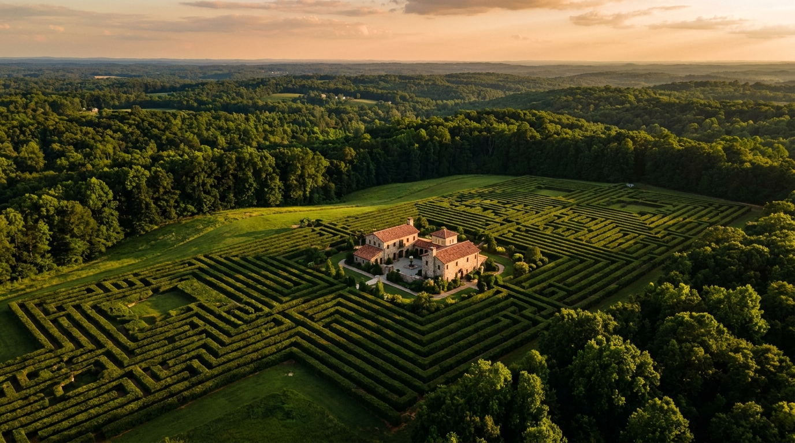
Location matters. The Piedmont Triad International Airport (GSO) is twenty to twenty-five minutes away, with direct flights to major hubs. The Yadkin Valley wine country, North Carolina's premier wine region, is forty minutes west. The Blue Ridge Parkway is ninety minutes northwest. Greensboro, Winston-Salem, and High Point collectively form a metro area of 1.7 million people. Raleigh-Durham (2.2 million) and Charlotte (2.7 million) are within sixty to ninety minutes.
The property is at the end of a road in the Moss Creek neighborhood, with a horse farm on its rear boundary. No natural springs or water crossings exist; all water features will be engineered from scratch. This is not a limitation. It is a canvas.
The sixty acres divide into three broad zones, each with a distinct character and purpose.
| Zone | Acres | Purpose |
|---|---|---|
| Owner's Residence & Hedge Buffer | 6.0 | Five-acre inner sanctuary, hidden within the hedge maze, plus buffer |
| Hotel, Spa & Restaurant | 2.0 | Compact luxury footprint with Italian Garden |
| Italian Garden & Hotel Maze | 1.5 | Exclusive guest amenity |
| Food Production | 7.0 | Vineyard, hop yard, orchards, herb and vegetable gardens |
| Hedge Maze Corridors | 8.0 | Four-plus miles of walkable path |
| Themed Lands & Experiences | 12.0 | 36 distinct worlds, gardens, and discoveries |
| Swimming Pond & Beach | 2.5 | Two-acre heated, swimmable pond with sandy beach |
| Exotic Animals & Petting Zoo | 1.5 | Llamas, gentle creatures; predation-free habitats |
| Horse Farm | 17.0 | Leased to Lisa's 501(c)(3) charity |
| Solar, Winery, Brewery, Roads | 2.5 | Infrastructure and production facilities |
| Total | 60.0 |
The property is roughly square, about 1,617 feet on a side, with a perimeter of nearly a mile. Every inch of that perimeter will eventually disappear behind thirteen-foot hedges, and inside those hedges, a world will unfold that nobody on the outside can see, map, or fully comprehend.
Sixteen luxury suites, each 600 to 1,000 square feet, with private terrace or garden patio, fireplace, and soaking tub. Some configurable as two-bedroom suites for families. A hotel small enough to feel like a private estate and large enough to generate the revenue that funds everything else.
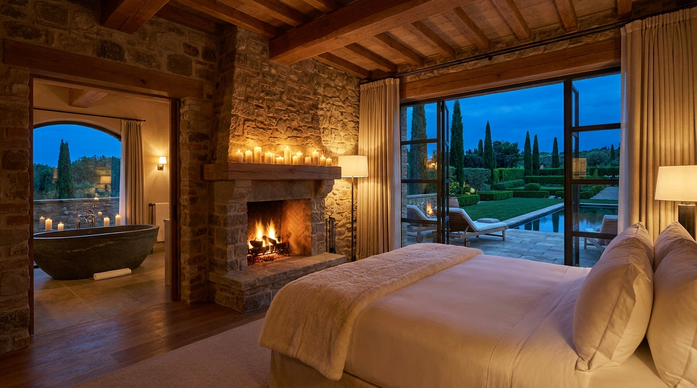
Guests arrive on a Modified American Plan: breakfast and dinner are included in the nightly rate. Thursday through Sunday, a 35-seat prix fixe restaurant opens to outside reservations. A dedicated Italian Garden of roughly one acre serves as an exclusive guest amenity, unreachable from the public park. A spa modeled on the Icelandic Skjól bathing sequence offers warm pools, cold plunges, sauna, steam, scrub rooms, and outdoor stone pathways connecting them all. A casual café near the park visitor entrance handles daytime traffic.
The arrival experience begins the mystery. The drive into the hotel passes through a reconfigurable hedge labyrinth that changes nightly: roughly a quarter-mile of road, sixty seconds at fifteen miles per hour, winding through eight-to-ten-foot hedge walls with eight to ten movable junction points. Between 38 and 307 unique route configurations are possible, a new one each night, configured after the last arrival and before the first morning departure. At least one point features a dramatic bridge crossover where the road dips eight feet below grade, passing under a hedge-walled bridge carrying another route segment overhead. Guests at dinner compare notes: "You went under the bridge? We went over it."
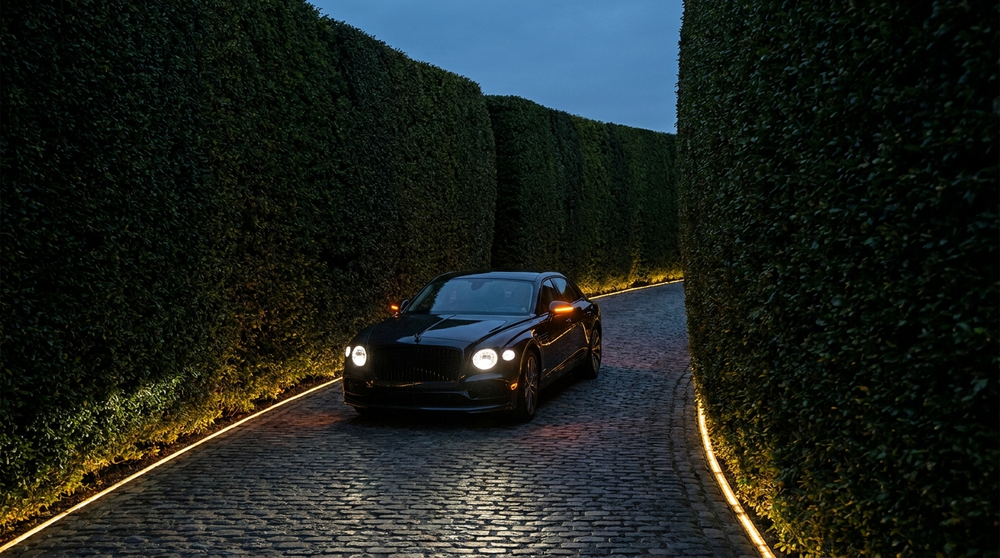
Select hotel suites, the exact number still under consideration, contain concealed, lockable entrances into the tunnel network. These are locked from inside by default and never used inappropriately. They allow family guests to travel between the hotel and the main residence via finely finished tunnel corridors, without interacting with hotel guests. The tunnels between the hotel and residence are finished like residential hallways, with art and beautiful lighting. Walking between them feels like strolling between wings of a single estate, not traveling between separate buildings.
Three luxury hotel brands are the targets for affiliation: Auberge Resorts Collection (ultra-luxury, 15 to 80 rooms, unique identity per property), Relais & Châteaux (the world's most respected small luxury estate collection), and Small Luxury Hotels of the World (broader but prestigious). Brand engagement will begin during the architectural design phase, as each has specific room size and amenity standards that inform the building program. The operating model is a management agreement, not a lease: 3 to 5 percent of gross revenue as a base fee plus 8 to 15 percent of gross operating profit as an incentive. The owner retains ownership, brand approval, budget approval, and chef and menu direction.
| Revenue Stream | Annual |
|---|---|
| Rooms (16 suites, $900/night MAP, 70% occupancy) | $3.68M |
| Restaurant (hotel guests + external Thu-Sun) | $1.10M |
| Spa | $400K |
| Events, private dining, buyouts | $300K |
| Total Revenue | $5.48M |
| Cost Category | Annual |
|---|---|
| Labor (25-30 FTE, all departments) | $1.50M |
| Food & beverage cost | $500K |
| Management fee (base + incentive) | $300K |
| Insurance, utilities, marketing | $400K |
| Maintenance, reserves, supplies | $200K |
| Miscellaneous operating | $300K |
| Total Operating Cost | $3.20M |
Hotel construction is budgeted at $12.5 to $16.5 million, including the inn building, site work, Italian Garden, entry infrastructure, furnishings, fixtures, equipment, kitchen, spa, architect, engineering, permits, and brand fees. The hotel is expected to operate at a loss in Year 1 (40 to 50 percent occupancy), approach breakeven in Year 2 (60 to 65 percent), and reach stabilized operations at 70-plus percent occupancy in Year 3. Early losses are covered by personal funds and sheltered by bonus depreciation.
This hotel is not the vision. It is the engine that makes the vision possible. Every dollar of surplus cash flow funds the next phase of the labyrinth.
The hedge maze is the physical heart of Labyrinth Park. More than four miles of walkable path wind through 36 themed worlds, connecting destinations with corridors that range from convenient and easy to navigate to deliberately, deliciously difficult. The property is surrounded by thirteen-foot hedges, appearing from outside as a single, vast, impenetrable maze. Amenity areas are clear and accessible. Challenge sections are twisty, complex, and intentionally hard to solve.
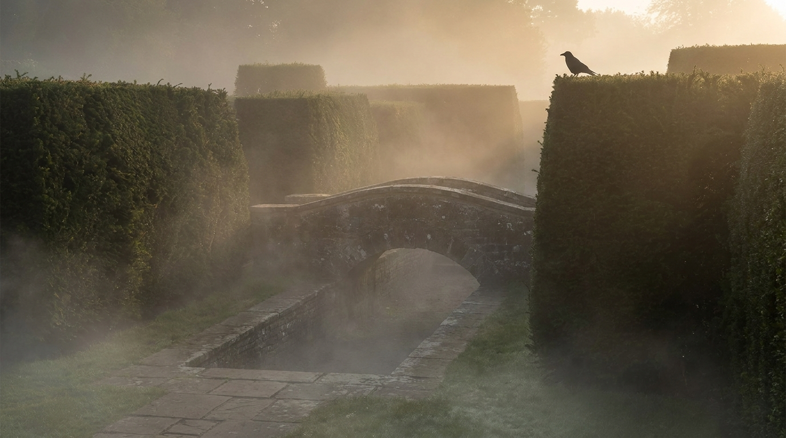
The hedge system requires approximately 8.9 miles (47,000 linear feet) of hedge rows: 0.9 miles for the perimeter, 7 miles of internal maze walls, and the rest in featured and signature zones. Five tiers of species create the living architecture: Green Giant Arborvitae for bulk corridors (reaching 13 feet in 3 to 4 years), Nellie R. Stevens Holly for the impenetrable perimeter (spiny leaves, 80 to 100-plus year lifespan), European Beech for formal areas (retains copper-brown leaves through winter), and English Yew for signature gardens (500-plus year lifespan, Versailles quality). The total hedge investment is approximately $2.9 million.
This is the breakthrough. The maze reconfigures itself.
Sixty movable hedge sections, each a living plant container mounted on a motorized platform, reposition overnight using a patented trough-and-elevator mechanism. Each container rests in a concrete trough set into the path surface. When it is time to move, an integrated elevator lifts the container roughly five inches, exposing a concealed roller assembly. The hedge unit rolls to a new trough position under powered, autonomous guidance, then lowers itself flush into its new home. In its resting state, each unit is visually indistinguishable from a permanently planted hedge.
The patent application title is "Autonomously Reconfigurable Living Landscape Maze System and Method." A provisional patent application has been prepared, and the filing fee is $320.
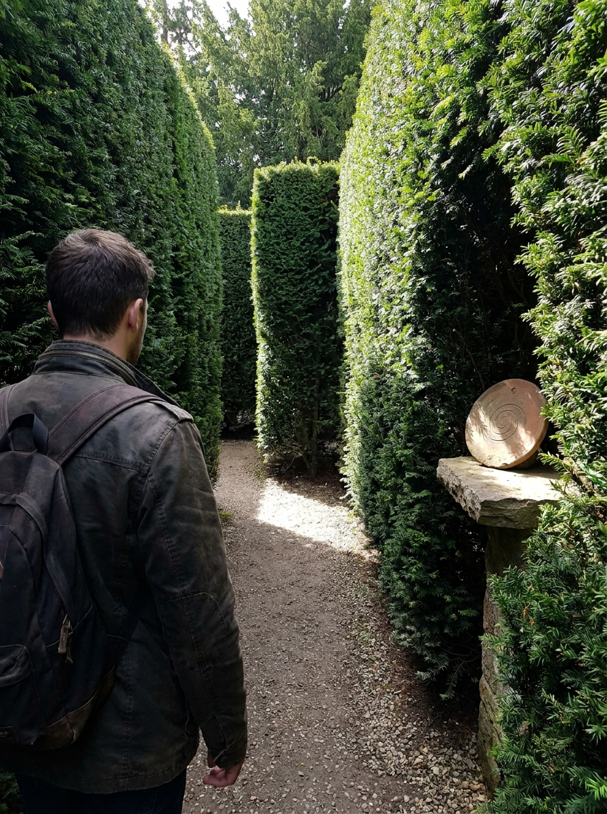
With 60 mobile units, each capable of 4 discrete positions, and a rotation system where only 20 of the 60 are open at any time, the system produces 4.6 × 1027 unique visitor-facing configurations. At one new configuration per day, exhausting them all would take approximately 1.3 × 1025 years, exceeding the age of the universe by a factor of ten to the fifteenth power. The maze is, for all practical purposes, infinite.
Only about one-third of the maze's sections are open at any given time. Every one to three weeks, sections open or close; sometimes two or three, sometimes none. The pattern never repeats across several years. Closed sections are used for maintenance, re-theming, replanting, or construction of new features. By the time a dedicated visitor has seen everything, new things have been created. A hand-drawn map in the visitor center shows today's open sections, slightly cryptic, not quite to scale. Part of the experience is figuring out the map itself. Regulars photograph each week's version and compare. The maps become collectible artifacts.
A digital guest navigation application, integrated with the central control system, provides wayfinding information adapted to the current maze configuration. It uses progressive revelation: the more you explore, the more the app reveals. An emergency mode can simultaneously reposition all mobile hedge units to create clear egress paths, ensuring any visitor can reach an exit within five minutes from any point in the maze.
Every section of the labyrinth is its own self-contained world. You do not walk "through" them; you enter them, and for a moment, you forget everything outside. Accessed through the ever-present hedge system, each world has its own atmosphere, its own logic, its own reason for being. False facades cover utilitarian surfaces. Nothing breaks the spell.
Three distinct woodland trail zones thread through the northern acreage. Zone A is dense mature forest: winding paths under canopy, discovery moments where shafts of light fall across a mossy clearing. Zone B is a fern gully with bamboo, a different biome entirely, where the sound of a hidden stream precedes its appearance. Zone C is an elevated ridge walk with long views through trees.
The Rose Garden sits elevated on the ridgeline, formal and precise, with a secret inner garden accessible only through a hedge portico or through the tunnel system below. Two exits lead deeper into the maze. The Culture Garden is a formal lawn with sculpture on plinths, framed by architectural hedge walls. The Nature Garden is English wild style, dense with butterfly and pollinator species, with a rustic round open pavilion perched above a steep bank overlooking an artificial stream.
A Wildflower Meadow of one acre blazes with seasonal color. Mowed paths wind through tall grass, leading to clearings that feel discovered rather than designed. The Open Meadow and Event Lawn (one and a half acres) hosts weddings, concerts, and gatherings, placed strategically far from the residence for sound isolation.
The Butterfly Pavilion is a semi-enclosed habitat surrounded by flowering gardens. The Aviary is a walk-through bird habitat. The Tropical Greenhouse is a climate-controlled interior world of lush, alien vegetation. A Japanese Garden with a stone-edged koi pond offers a formal viewing deck. Two additional koi ponds hide elsewhere: one naturalistic, discovered by surprise in the maze; one near the residence, private, the owner's favorite.
A Duck Pond hosts live ducks in a peaceful, hedge-enclosed sitting area. A Geese Meadow offers a small fenced meadow with water access. The Children's Maze is a simple maze-within-a-maze designed for young visitors. A Zen Rock Garden of raked gravel and stones creates a contemplative pause in the journey.
The Sunken Amphitheater seats 50 to 100 for outdoor performances. The Moon Garden, planted entirely with white and silver flowers, glows at night and fills the air with fragrance.
Two acres of engineered swimming pond, disguised as a natural body of water but meticulously clean and swimmable, with a sandy beach, heated year-round, and artificial streams flowing in and out. Reached through an easy-to-remember maze path from the hotel, this is the single feature with the highest Instagram potential on the entire property.
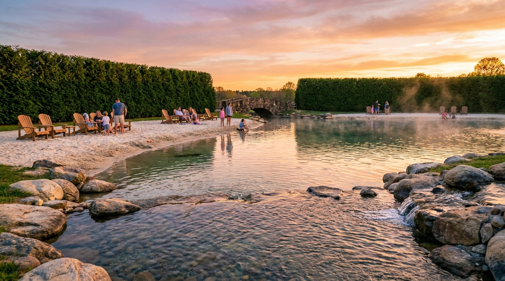
And then there are the tiny moments. The things you stumble upon. A Wishing Well hidden in a maze wall, barely ten feet square, where coins echo as they fall. A Reading Nook with a bench and a bookshelf tucked into the hedge. A Sundial Circle open to the sky. A Whispering Gallery where a curved wall carries whispers thirty feet across the space. Three Stone Bridge Crossings where the path rises over tunnels below. A small, climbable Folly Tower offering an overhead view of the maze. A Mosaic Floor Room revealed when a hedge opening reconfigures. A Bell Garden of tuned wind chimes creating an ambient sonic experience. A short stretch of Mirror Maze with mirrored hedge walls. A Fog Garden where misting systems create ground-level fog at dawn. A Firepit Circle for evening gathering. A Stargazing Clearing with zero light pollution and reclining stone benches. Four Secret Doors, hidden hedge doors that lead to nowhere, or to somewhere. A Grotto, a small cave-like space with a water feature. A Compass Rose in inlaid stone at a major maze intersection.
And, stretched through the hedge wall itself, a tin-can telephone. Two cans, connected by a string, punched through from one corridor to another. You pick it up and hear your child laughing on the other side of a wall you cannot see through.
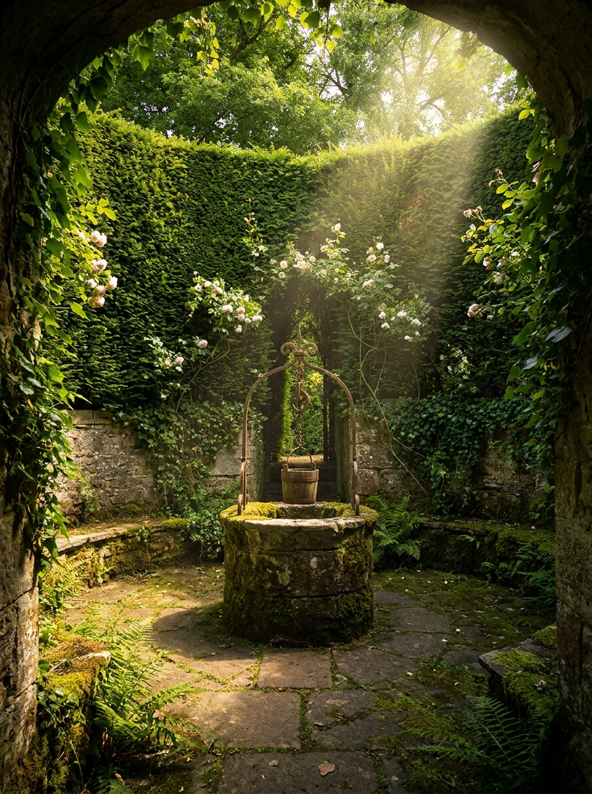
Beneath the rolling hills and winding paths, a network of tunnels connects every part of the property. The main structure is a six-spoke wheel: three tunnels crossing at sixty-degree angles, converging on the five-acre central residence. Each tunnel runs edge to edge across the full property. Total main tunnel length: 5,350 linear feet, just over one mile. Average spoke length from center to edge: 892 feet.
Tunnel widths vary by function. High-bandwidth sections near the hotel and residence are 25 feet wide by 15 feet tall, large enough for vehicles, utility routing, staff movement, and secret passages all running in parallel. Standard service corridors are 12 by 14 feet, accommodating golf carts and utility lines. Remote park sections narrow to 8 by 8 feet, enough for two golf carts to pass. And some passages, the intimate ones, the truly secret ones, are just 3 to 6 feet wide. Pedestrian only.
Numerous side tunnels interconnect the spokes, extending special-purpose passages. Wherever possible, tunnels are embedded within larger utility structures or behind building foundations, minimizing excavation costs. Construction uses shallow excavation (4 to 6 feet into soft clay, staying above the water table at 800-foot elevation), with precast concrete sections laid in the trench. The excavated dirt becomes the material for artificial hills and berming above, creating the rolling landscape that makes the property so beautiful while hiding the infrastructure that makes it so functional.
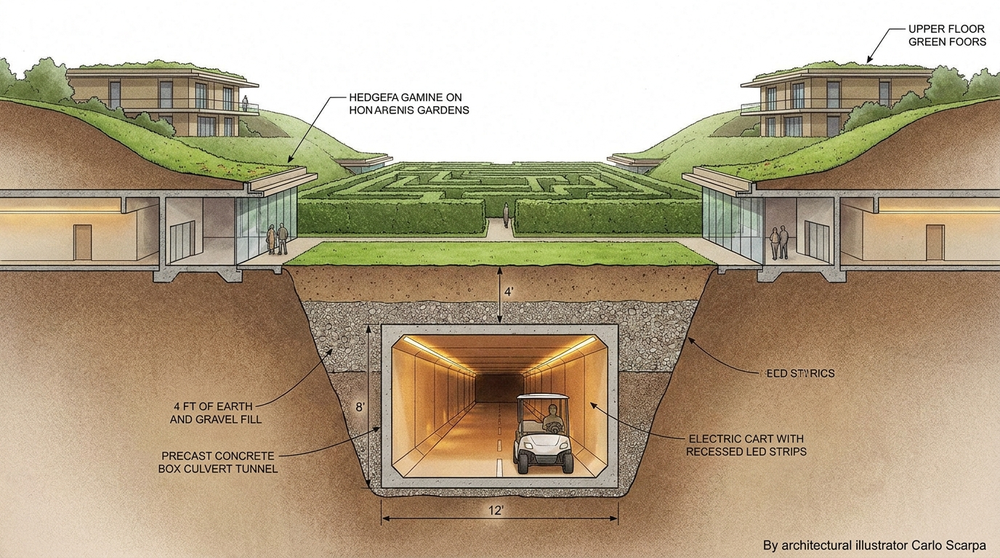
About 10 to 15 percent of total footage. Stone bridge crossings, decorative tunnel moments. Themed, lit, photographable. What guests see and remember.
About 5 percent. Curated behind-the-scenes tours. "Let me show you something most people never see." A tiny fragment of the real network, presented as the whole.
About 70 percent. Power, water, fiber, HVAC, staff movement, golf cart logistics. Functional, well-lit, not pretty. All utilities routed underground. No above-ground infrastructure anywhere on the property.
About 10 to 15 percent. Finely finished residential corridors. Beautiful, intimate, invisible. Known in full to exactly one person.
The tunnels between the hotel and the residence are finished like residential hallways: artwork, beautiful lighting, the feeling of passing between wings of a single home. The distance is calibrated so that a walk from hotel suite to main house feels like a pleasant stroll, no golf cart needed. But the guest crossing that corridor passes under a bermed hill and a high wall, unaware that they have traveled between two completely separate buildings.
And then there is the feature that, above all others, is non-negotiable. A full reproduction of the Inverted Tower at Quinta da Regaleira in Sintra, Portugal: the Poço Iniciático, the Initiation Well. From the surface, it appears as a mysterious stone circle set into a garden clearing, perhaps an old foundation, perhaps a ceremonial platform. But step through the entrance and you begin to descend. A spiral stone staircase winds downward through nine levels, roughly ninety feet into the earth, each landing separated by Gothic arches carved from stone. The number nine is deliberate: nine levels of hell, nine degrees of initiation, nine circles of the Masonic and Templar rites that inspired the original. Light filters from above and fades as you descend, replaced by the glow of embedded fixtures in the stone. The staircase is open in the center, so that looking up from the bottom you see the sky as a distant circle framed by the receding spiral of the tower. Looking down from the top, you see a visitor ninety feet below, impossibly small, standing at the convergence of tunnels that radiate outward into the underground network.
At the bottom, the well connects directly to the tunnel superstructure. You can descend into the earth through what appears to be an ancient ceremonial shaft and emerge, minutes later, in a completely different part of the property. For donors and high-tier visitors granted access, this is the single most memorable experience on the estate. For everyone else, it is a rumor: something glimpsed through a locked gate, something mentioned by a fellow guest who cannot quite explain where they went or how they got back.
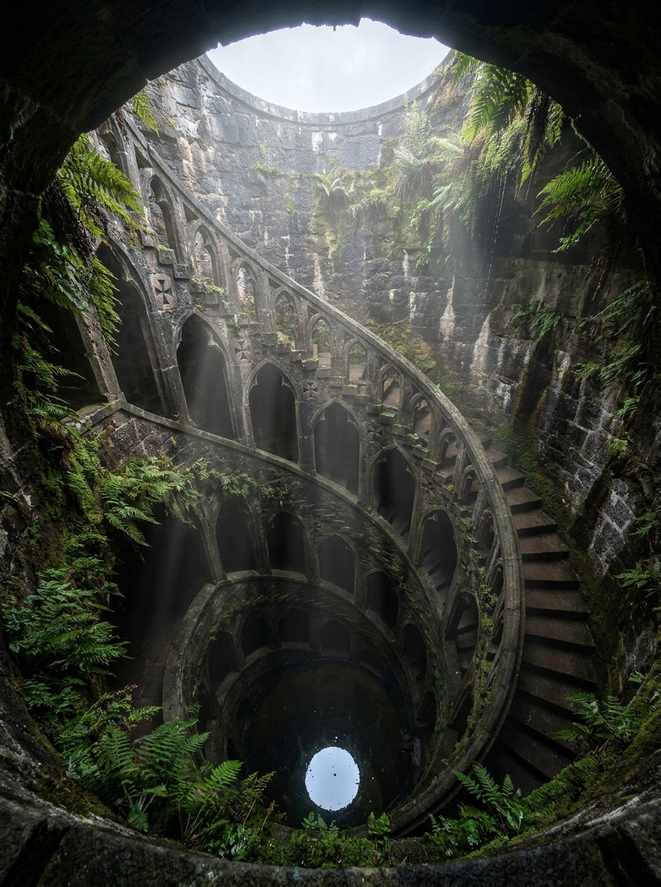
Two separate architectural teams work on the tunnel system; neither sees the complete plans. The primary architect designs the residence, hotel, and known tunnel network. A secondary structural engineer, under separate NDA, handles private passages, receiving only structural tie-in points, never the full site plan. The threat model is not betrayal but compulsion: no single person can reveal the complete network under pressure, bribery, or subpoena. Only one person holds the master plan.
Labyrinth Park never confirms, never advertises, and never explains. This is the Denial Doctrine, and it is absolute. The park never confirms that the maze reconfigures itself. Never confirms that artifacts are placed by staff. Never acknowledges the existence or nature of the tunnel network, the identity of the owner, the age or origin of the maze, or how any specific section is accessed.
The official position, on everything: "We've heard these reports. Some aspects of the property continue to surprise us. We don't have a complete understanding of the property's full history or behavior."
The mythology is built on real history, woven into something stranger. The Great Trading Path (the Occaneechi Path) was a major Native American trade route through Guilford County. The Occaneechi were guardians and middlemen. The Saura and Keyauwee were Siouan-speaking Piedmont peoples. The property is mythologized as sitting on a forgotten branch of the old trading path. Nearby, Quaker meeting houses at New Garden had documented secret tunnels, part of the Underground Railroad. Legend holds that some passages predated European construction, a perfect parallel to the actual hidden tunnels beneath Labyrinth Park. Browns Summit itself sits at one of the highest elevations in Guilford County; high places have always been places of vision, watchtowers, sanctuaries. And forty miles south, the Devil's Tramping Ground in Chatham County is a famous barren circle where nothing grows, invoking the Piedmont as a place of uncanny geometry.
Under glass in the hotel lobby, with a brass plaque reading "From the Labyrinth Park archives. Provenance under review," sit the commissioned artifacts. A weathered journal page, attributed to a Quaker surveyor circa the 1790s: "the hedgerows on the Brown summit will not be made to grow strait, tho' I have replanted them twice." A hand-drawn map fragment, "found during grading," showing a spiral path with Siouan pictographs and a notation: "do not cut the old growth on the high circle." A framed letter from a (fictional) UNC-Chapel Hill folklorist in the 1930s, requesting permission to study "the unusual growth patterns on the Southerland parcel." One or two pieces in the restaurant. A map in the spa changing room. Scattered, discovered by guests, never consumed.
The property's most recent owner built the hotel around what was already an older hedge maze of uncertain origin. The maze had been growing and evolving on the property for an indeterminate period before the current development. Prior owners are not available to disclose details about its history. Some areas where hedge grew over appear externally as dense vegetation nobody can pass through. The Labyrinth Park Archaeological Trust has chosen not to disturb the natural state of the maze's more ancient, as-yet unexplored portions.
Every statement is technically true. The maze was built before the hotel opened (by two years). Prior owners are unavailable. The maze has never been fully mapped by the public. Some sections are inaccessible. The narrative never claims a specific false age. It says "uncertain origin." This is not fraud. It is stagecraft.
Year 1: locals notice, post on Facebook groups. Year 2: regional travel bloggers write "The Strangest Park in NC." Year 3: a Reddit thread goes viral. Year 4: Atlas Obscura writes it up, then the New York Times travel section calls. Year 5 and beyond: the internet has done the marketing. The official response is still, "We've heard these reports." A few strategically anonymous social media posts seed the mystery early (drone footage of "secret regions," speculation threads), but nothing is traceable to the organization. The academic partnerships with UNC and Wake Forest, conducting real research on the property, lend credibility. The line between what is real and what is curated becomes genuinely impossible to determine from outside.
Staff play their part, but their ignorance is mostly genuine. All employees enter through a separate service gate and travel to work areas via service tunnels. Most staff never drive or walk the guest arrival labyrinth. When guests say "the driveway was different today!" staff genuinely don't know. Employment agreements include perpetual non-disclosure of operational details. Staff may say: "I've heard guests mention that." They may say: "It does seem different sometimes." They may say: "We're still learning about the property ourselves." They may never confirm deliberate human engineering of any mystery.
The Labyrinth Park Archaeological Trust maintains a standing offer to purchase significant archaeological finds discovered on the property. This is not framed as a game, a contest, or a sweepstakes. It is framed as an acquisition policy of a serious, if somewhat eccentric, scholarly organization. Discoverers are called "archivists," not winners. The money is "but an afterthought" compared to the artifact's significance. The ceremony language: "The Trust is pleased to acquire this significant find."
| Tier | Artifact | Value | Frequency |
|---|---|---|---|
| 1. Medallions | Hand-pressed clay discs with spiral and labyrinth motifs, each unique, commissioned from artisan ceramicists, properly aged | $100 - $500 | Frequent (many per year) |
| 2. Stone Tablets | Larger tablets with Siouan-Minoan hybrid pictographs, hidden in rooms that only open on astronomical dates (solstices, equinoxes, full moons) | $5,000 - $25,000 | A few per year |
| 3. Major Artifacts | Carved gorgets (shell medallions echoing real Siouan artifacts) or bronze labrys (double axes), museum-quality | $100,000 | Once every 1-3 years |
| 4. The Grand Artifact | The Thread of Ariadne: a golden thread (actual gold wire, coiled on a spindle), or a solid gold labrys. Material value alone is significant; mythological value is beyond price. | $1,000,000 | Once per decade, or never |
Artifacts are placed on surfaces (shelves, niches, pedestals, alcoves), never buried, never hidden inside anything. The rooms containing artifacts are only accessible via reconfigured maze paths. Yesterday's artifact room is today's sealed dead end. No digging is allowed, enforced with immediate ejection. The movable hedge sections mean you cannot camp out waiting for a room to open. Security cameras in artifact rooms are described as "preservation monitoring cameras for the archaeological site."
The Thread of Ariadne is physically placed in its room on exactly one day per year. The day is chosen by an algorithm based on parameters set only by the owner. The path to the room opens on that day only, at Legendary difficulty. If undiscovered, the artifact is physically retrieved the following morning. Nobody ever knows which day it was, including all staff. Only the central control system and the owner know the schedule. The digital twin simulates each day's configuration to verify the artifact room is reachable at the intended difficulty within park operating hours.
Humanoid robots retrieve artifacts from a deep, private stockroom (adjacent to the server room at the heart of the maze, accessible only by the owner via biometric lock) and place them in designated rooms during overnight reconfiguration. The robots navigate via the tunnel network, unseen by the public or most staff. At most two or three of the most trusted staff may be aware that robots carry objects; they do not know what, where, when, or why. Undiscovered artifacts are retrieved by robots the following night and returned to inventory.
A growing glass-case collection in the hotel or visitor center displays each artifact with a photo of its discoverer, the date, the location in the maze, and a description. By Year 20: 200-plus medallions, a dozen tablets, several gorgets, and a wall of discoverer photos. Guests who found a $100 medallion in 2035 bring their grandchildren in 2055 to see their name on the wall. The museum itself becomes an attraction and a reason to return.
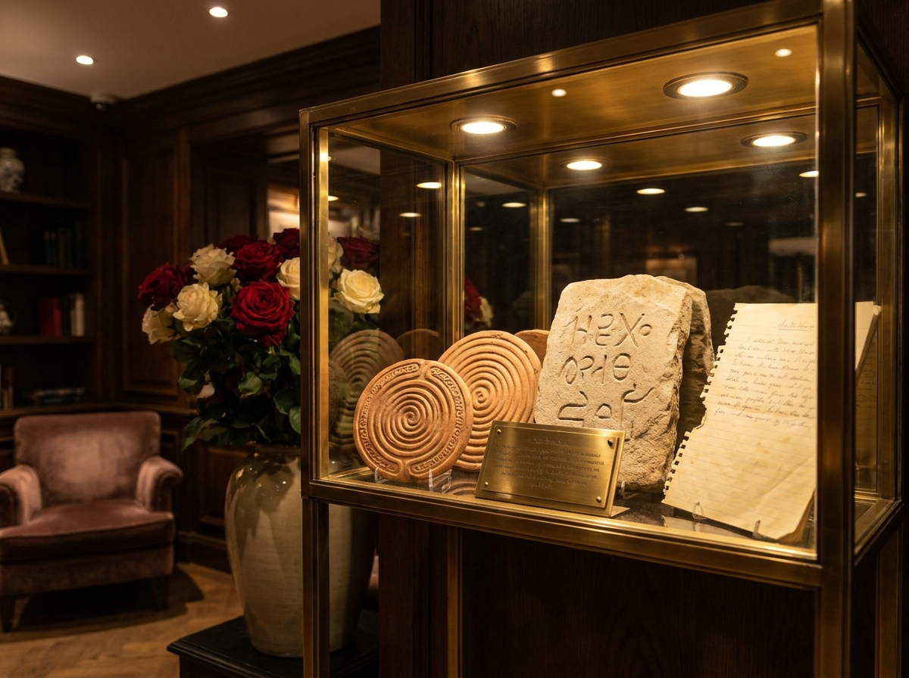
The treasure program transforms the park into a daily destination. With artifacts driving demand, the park operates daily (not just Sundays), with 500 to 2,000 visitors per day at scale. Revenue projections from admissions alone: $9 to $18 million per year, on top of the hotel's $5.5 million. Combined, this matches or exceeds the revenue potential of Biltmore Estate.
The agricultural operations on the property are branded collectively as Labyrinth Farms, and they serve a dual purpose: supplying the hotel restaurant with ingredients grown fewer than 500 feet from the kitchen, and providing guests with a living, working landscape that deepens the experience of being here.
A vineyard of two and a half acres grows estate wine grapes: Cabernet Franc (award-winning in the Yadkin Valley), Petit Verdot (for depth and structure), Viognier (the aromatic white that thrives in the Piedmont), and Chambourcin (a bulletproof hybrid for North Carolina humidity). Production at maturity runs 3 to 6 tons per year, yielding 1,500 to 4,000 bottles. The wine is estate-only, served exclusively at the restaurant, sold only in the park. Scarcity is the brand. The label reads "Labyrinth Park Estate."
A hop yard of one acre grows Cascade and Chinook hops on 15 to 20-foot bine trellises. The signature product: "Labyrinth Harvest Ale," a wet-hop beer brewed within hours of harvest, using fresh hops picked that morning. Available only on the property for approximately two weeks each September. The estate winery ($250K to $450K, a 1,500-square-foot building with crush pad, destemmer, press, fermentation tanks, and French oak barrels) and the estate brewery ($400K to $700K, a 7-barrel brewhouse with taproom) are both destinations within the labyrinth. The hop trellis grows up the brewery's exterior wall. The winery crush pad overlooks the vineyard.
Orchards produce fruit. Berry patches grow blackberries, blueberries, and strawberries. Cherry trees serve the restaurant and u-pick programs. Vegetable and herb gardens supply the kitchen daily. Chickens provide fresh eggs. Wagyu cattle (possibly five head) produce premium beef for the restaurant. When production exceeds hotel demand, orchards and berry patches open for paid u-pick visits. Summer camp kids from the horse charity spend an hour picking berries, eat what they want, turn the rest over to the farm. The farm makes pies for them the next day; the surplus goes to the restaurant.
The horse farm occupies seventeen acres on the north portion of the property, leased to Lisa's 501(c)(3) charity. Eight to twelve horses serve hotel programs, educational access for children, and boarding for outside clients. Llamas and other gentle animals live in a one-and-a-half-acre petting zoo area, given predation-free existences with all the food, company, and friends they could want. Every animal on this property lives a good life.
Scattered throughout the property, integrated into stonework, metalwork, floor patterns, garden layouts, and water features, is a complete system of esoteric symbolism drawn from the world's contemplative traditions. Nothing is labeled. Nothing is explained. Guests who recognize symbols feel a jolt of recognition. Those who don't see beautiful decorative stonework.
The arrival sequence tells the story. At Station 1, the largest and most formal approach, an outer hexagon 92 feet across frames a center hexagonal still pool, from which rises a 23-foot obelisk, its Egyptian and Masonic associations carried inherently. Smooth water walls flow down tilted, modernist surfaces as 4-inch channels carry water outward from the pool. At Station 3, the motorcourt itself, sunken twelve feet below the lawn, rose bushes grow around a Rose Cross, the Rosicrucian emblem: roses blooming at the intersection of the cross, representing the unfolding of spiritual knowledge. This is the first thing a guest sees upon arriving at the home. At Station 2, between the obelisk and the motorcourt, stands a living Tree of Life, carefully selected and trained, sacred across all esoteric traditions: the Kabbalistic sephirot, the Norse Yggdrasil, the Hermetic tradition.
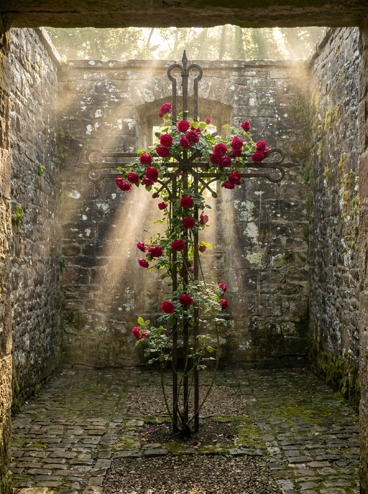
Rosicrucian: the Rose Cross in the motorcourt, rose motifs throughout the Rose Garden, the number seven recurring in design. Masonic: a compass rose inlaid at a maze intersection, square-and-compass geometry in stonework, the all-seeing eye in a water feature or tunnel entrance carving. Templar: a red cross pattée set into a wall stone, a circular meditation space echoing the Temple Church in London. Hermetic: "Quod est superius est sicut quod est inferius" ("As above, so below") carved in Latin, perfect for a place where the world above mirrors a hidden world below. Kabbalistic: the Tree of Life at Station 2, sephirotic geometry embedded in garden layouts and floor patterns. Alchemical: symbols of transformation (the philosopher's stone, the ouroboros, solve et coagula), appropriate for a property that transforms raw land into living art.
Persian and Babylonian: the word "paradise" comes from Persian pairidaeza, meaning "walled garden." Labyrinth Park is a walled garden. Ziggurat and stepped forms appear in the landscaping. Egyptian: solar symbolism, the Aten disc; the solar array could be oriented with a nod to Akhenaten's sun worship. The obelisk at Station 1 carries this resonance inherently. Sikh: the Khanda (double-edged sword with circle and two kirpans) as a symbol of spiritual sovereignty and the unity of God, subtly and respectfully integrated. Sacred geometry: the Flower of Life and Metatron's Cube in floor patterns, golden ratio in architectural proportions, Fibonacci spirals in garden planting patterns. Illuminati: an owl sculpture in the Nature Garden, watching from a branch; pyramid and eye motifs.
Minoan mythology runs throughout the property's DNA. The labrys (double-headed axe) appears as a subtle recurring symbol in stonework and metalwork. The Greek key (meander) pattern defines paths, tile work, and stone borders. Ariadne's thread is made literal: a golden line embedded in the maze floor as wayfinding. The Minotaur is referenced obliquely, never literally. Daedalus, the master builder, is the archetype honored in the architecture itself.
The overall effect is a place built by someone who has studied deeply without ever declaring allegiance. An homage to the greats, meant to inspire speculation of every kind, but only honest speculation reflecting genuine spiritual kinship. One tradition is explicitly excluded: the Golden Dawn and derivative ceremonial magic organizations. No connection, no kinship.
At the heart of the labyrinth, hidden within a five-acre circular carve-out, surrounded by the hedge maze on all sides, visually and acoustically separated from the hotel by bermed hills and high walls, sits the residence. It is the center, geographically and spiritually, of the entire property.
The main house is hexagonal, with 23-foot edges and three wings (designated A, B, and C, each approximately 687 square feet) radiating from a central atrium of roughly 1,374 square feet. A rotated scalene triangle forms the upper level, asymmetric to optimize room widths and door clearances, containing three rooms: bedroom (approximately 826 square feet), office (approximately 826 square feet), and bathroom (approximately 740 square feet). Total plan area: roughly 7,200 square feet. The atrium floor sits two feet below entry grade, with the roof soaring 43 to 49 feet above, creating a 45-foot void that is the vertical soul of the building.
Three levels are built into the hillside. The top level, the owner's private quarters, is the only one visible from the lawn approach. The middle level contains guest suites in Wings A and B, embedded in the hill with private rear courtyards facing downhill. The lower level opens fully to grade at the rear pool terrace, containing shared living space in Wing C. Two elevators serve all levels: a public glass architectural elevator (maglev when available) and a private, concealed elevator with a hidden door.
The main guest entrance begins at a gate (a flush cattle grid, no columns), passes through 50 feet of naturalistic planting, then a 200-foot hedgerow lane, arriving at a circular turnabout with flanking fountains. The land rises, and at the high point, the first reveal of the house appears through a gap in the hedge. Then descent, as the land rises around you. A lawn berm tunnel (precast box culvert, 10 to 12 feet clear) passes under the lawn, and you emerge in the motorcourt, sunken twelve feet below the lawn grade, open to the sky, with water sheeting down battered stone walls all around you. The service and guesthouse entrance is at a separate gate, roughly sixty degrees around the perimeter. The owner's entrance is an abrupt hillside tunnel entrance with no ceremony, leading directly to a private below-grade garage.
Nearby, appearing from all exterior views as an entirely independent estate, sits the guesthouse: hexagonal (without an atrium), approximately 1,374 square feet per level across two levels, totaling roughly 2,750 square feet. Master bedroom suite, bunkroom, living and kitchen above; game room, recreation, bar, and party room below, facing its own pool, hot tub, and cold plunge. A large connector garage space, hidden behind an ivy retaining wall at the shared pool terrace, links the two houses. A secret tunnel connection runs between them as well.
At the lowest point on the entire property, deep within the residential core, beneath the residence, at the convergence of the tunnel network, sits the server room. Significant compute capacity, unusual for a hospitality organization even by 2038 standards. Climate-controlled, secured, redundantly powered by solar, grid, and generator. This is the true center of the labyrinth. Every myth has something at the center of the maze.
The property is designed so that its owner can move through the entire estate via the private tunnel network without encountering any staff or guests. The owner is a reclusive presence: known to exist, rarely seen, adding to the mystique. The mind at the center never leaves.
The vision is magnificent. The business is rigorous. Both are required.
Labyrinth Park LLC (for-profit) owns all 60 acres and operates the park, hotel, and all commercial activities. Labyrinth Park Trust LLC (for-profit subsidiary) commissions and places artifacts, pays treasure rewards, and operates the museum displays, functioning as the promotional arm. Lisa's Horse Charity (501(c)(3)) operates therapeutic and educational equine programs for underserved youth, with an independent board and Lisa as Executive Director, leasing the 30-acre horse farm at fair market rate. A second Education and Conservation Nonprofit (501(c)(3)) runs botanical education, school field trips, conservation programs, and veteran and senior programs, paying the LLC a fair-market facility-use fee. The nonprofits are genuine arm's-length tenants with genuine charitable missions, never vehicles for family control of nonprofit assets.
The tax strategy is layered and potent. Roth conversions begin during Florida residency (no state income tax), withdrawing $475K to $520K per year from pre-tax 401(k) while staying within the 24 percent federal bracket, saving roughly $60K-plus in NC state tax over three years and converting $1.4 to $1.6 million into Roth. Bonus depreciation (100 percent, permanent under OBBBA) applies to all land improvements: paths, landscaping, fencing, lighting, irrigation, drainage, parking, hedge maze hardscaping (15-year property), plus benches, signage, fixtures, equipment, spa equipment, and kitchen equipment (5 to 7-year property). A cost segregation study on the inn reclassifies 30 to 40 percent of the $12 to $15 million build cost into accelerated categories, producing $3.6 to $6 million in bonus-eligible deductions. A conservation easement on 20 to 30 acres of undeveloped horse farm acreage provides a charitable deduction for the reduction in property value, deductible up to 50 percent of AGI with a 15-year carryforward. QBI deduction (20 percent) on net business income kicks in once the park and inn are profitable.
| Revenue Source | Annual (Stabilized) |
|---|---|
| Hotel (rooms, restaurant, spa, events) | $5.48M |
| Park admissions (500-2,000 visitors/day) | $9 - $18M |
| Combined Revenue at Scale | $14.5 - $23.5M |
Sole ownership is non-negotiable. The financing strategy relies on staged capital deployment and aggressive use of the tax code to make equity nearly free on an after-tax basis.
The hotel is financed via an SBA 504 loan, which requires only 10 to 15 percent equity for hospitality projects. Owner's equity: $1.5 to $2.5 million. Loan: $10 to $13.5 million. Bonus depreciation covers the equity outlay, pulling taxable income well below the RMD crunch threshold. The residence is financed separately via conventional mortgage ($1 million down payment), by which point the hotel is already generating revenue.
| Item | Cash Required |
|---|---|
| Land (purchased outright, used as loan equity) | $700K - $875K |
| Hotel SBA equity (10-15% of $15M) | $1.5 - $2.5M |
| Design and soft costs before loan closes | $200 - $400K |
| Total Cash at Launch | $2.4 - $3.8M |
Hotel cash flow services its own debt ($970K per year). Surplus ($1.3M per year at stabilization) funds further property development. By Year 4 to 5, the property feeds itself, no longer pulling from savings. Every phase after the hotel opens is funded by revenue from the phase before it.
| Component | Cost |
|---|---|
| Land | $700K - $875K |
| Hotel, spa, restaurant | $12.5 - $16.5M |
| Personal residence (compound) | $6.8 - $10.6M |
| Hedge and labyrinth system | $2.9M |
| Tunnel superstructure (main network) | $4.3 - $8.0M |
| Park infrastructure (paths, water, lighting) | $1 - $2M |
| Winery and brewery | $500K - $800K |
| Vineyard, hop yard, gardens | $100 - $200K |
| Swimming pond, water features, greenhouse, aviary | TBD |
| Total Estimated | $30 - $40M+ |
The starting position (projected around 2032, age approximately 58): a net worth of $8 to $12 million, grown from the current $3.6 million through continued portfolio growth. At $8 million it is feasible but tight. At $10 million, comfortable with margin for error. At $15 million, a certainty.
Labyrinth Park LLC is the entity that owns the property and operates every commercial activity. But the name on the LLC is not a person. It is a registered agent, an anonymous representative, behind a Wyoming-organized limited liability company chosen specifically for the state's strong privacy protections. The owner's name does not appear on any public filing.
The "board" is referenced occasionally in official communications. Nobody has ever met the board. When decisions are announced, they come from "the property's leadership." When questions are directed upward, they are received by an email address. The architects work under NDAs that prohibit disclosure of client identity to each other. This is standard practice for high-net-worth clients; architects experienced with this arrangement do not consider it unusual.
Two separate architectural teams, neither seeing the complete plans. Two separate tunnel contractors from the earlier design phase, neither seeing the full layout. The permitting strategy files every space to code, inspected and permitted, but each building is filed as a separate individual project. No inspector sees the unified site plan. Concealed doors are installed after final inspection as interior modifications, which do not require permits. Passages are permitted as utility chases or mechanical rooms.
The perimeter is a roughly circular precast concrete wall, twelve feet high (twenty-four feet at the rose garden ridgeline section), with an inward cant that creates an anti-climb profile, thorny climbers on the outside face, and a concealed sensor cable in the cap. The wall is hidden between two layers of hedge: inner corridor and outer corridor. At completion, the wall is completely invisible, swallowed by living green on both sides.
Key security and operations staff who hold secrets are paid extremely well ($120K-plus for roles that carry confidentiality obligations). NDAs specify $500K in liquidated damages, written on the page they sign, surviving termination indefinitely. Post-employment consulting retainers of $5K per year for ten years after departure, with annual NDA re-certification, ensure silence endures. Cost: $5K times 3 key staff times 10 years, $150K total. Insurance against loose lips. People do not risk a great job, and they do not bite the hand that is still feeding them.
The owner can move through the entire estate via the private tunnel network without encountering any staff or guests. Known to exist, rarely seen. A presence, not a person. Adding to the mystique of a place that already has more mystique than it knows what to do with.
The vision unfolds across four overlapping phases, preceded by a six-year pre-acquisition period of quiet preparation.
The first real dollar is $320 for the patent filing, followed by $30K to $50K for a feasibility study. Beyond that, the pre-acquisition years are about positioning, not spending. In 2028: engage a tax CPA and tax attorney to structure entities and plan the Roth conversion strategy. In 2029: begin Florida Roth conversions ($475K to $520K per year at 24 percent), and begin informal conversations with the primary architect, Toby Witte of Wittehaus. In 2030: commission the HVS or CBRE feasibility study and begin brand conversations with Auberge, Relais & Châteaux, and SLH. Late 2030: architect under contract, schematic design begins, informed by brand standards. In 2031: land acquisition or option agreement, negotiating from strength with a seller who has been listed for five-plus years. Year zero, 2032: construction loan closes, ground is broken. Everything above is complete.
Acquire land. Begin inn, spa, and restaurant construction, financed by SBA 504. Build the initial park: a half-mile hedge maze, the Italian Garden, entry landscaping, a visitor café. Plant the perimeter hedge (Tier 2 Nellie Stevens Holly, double-stagger row) and bulk maze corridors (Tier 1 Green Giant Arborvitae). Begin excavation of the main tunnel network. Apply bonus depreciation on all land improvements. Most of the property hides behind hedge and construction activity. Budget: approximately $15 to $20 million.
The hotel opens and the operator begins generating revenue. Construction continues on the main house, funded by hotel cash flow and a separate home loan. The park and hedge maze expand. Lisa's horse charity begins leasing the farm acreage. NC residency is established after the Roth conversion years are complete.
The main house becomes livable, with move-in around Year 5. The five-acre inner sanctuary is well-developed. A conservation easement is placed on the horse farm acres. Guesthouse construction begins. Full grounds, water features, and maze expansion proceed. Hotel revenue matures toward stabilized occupancy. Budget for Phase 2 and 3: approximately $8 to $12 million.
The full compound is operational. The winery and brewery are constructed (Year 5 to 6). Vineyard and hop yard are established. The swimming pond, duck pond, koi ponds, butterfly pavilion, aviary, and tropical greenhouse are built. Remaining maze sections are completed with premium formal hedges. Robotics integration for grounds and security begins in earnest; by full build-out, roughly twelve humanoid gardening robots and twelve specialty gardening robots roam the property 24/7/365 under the management of three humans and one head gardener. QBI deductions kick in on net business income. Everything is running as an integrated operation: park, charities, hotel, farm. Budget for Phase 4: approximately $5 to $8 million.
| Role | Who | When |
|---|---|---|
| Tax CPA (RE + hospitality) | TBD | 2028 |
| Tax attorney | TBD | 2028 |
| Hospitality consultant | HVS or CBRE Hotels | 2030 |
| Primary architect | Toby Witte / Wittehaus | 2029 |
| Secondary structural engineer | Referred by Toby, under NDA | 2031 |
| Realtor | Angie | When ready for land |
| SBA 504 lender | TBD | 2031 |
| Brand contact | Auberge / R&C / SLH | 2030 |
No luxury estate property exists in the Piedmont Triad, the largest Southeast metro area without one. The nearest comparable is Barnsley Resort in rural Georgia, four hours south, a 3,000-acre property commanding $350 to $800-plus per night with strong occupancy. Grandover Resort in Greensboro is a corporate conference hotel, not a boutique experience. The Kimpton Cardinal in Winston-Salem is an urban hotel without grounds. The wedding and event market is underserved. The location rates a 7 out of 10, market opportunity an 8.5. No brand recognition exists initially, and the property must be entirely self-contained, but these are problems that the labyrinth itself solves. You don't need to tell people to come. You need to make them unable to stop talking about why they came.
This document contains the complete vision for Labyrinth Park as of April 2026. It is shared with fewer than five people. You are one of them. Guard it accordingly.